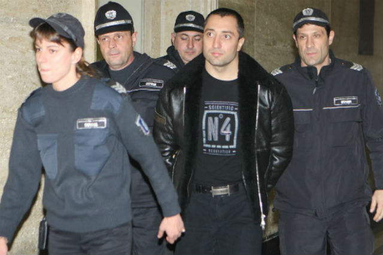
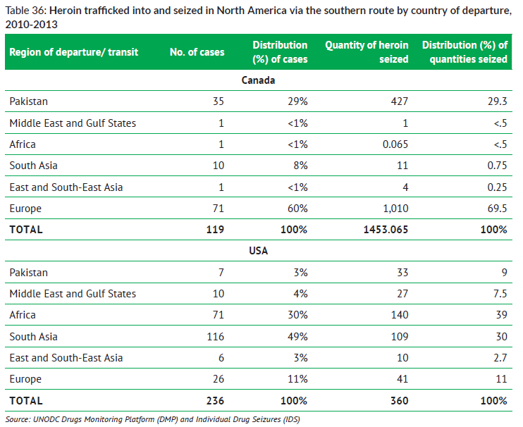

The Heroin Epidemic
Opiates have become an epidemic across our world. Millions of people are affected by this drug every year. The origin of 80% of the world's opiates originate from Afghanistan. Here we will look at how opiates travel from Afghanistan to it's destinations around the world
Afghanistan
Afghanistan is the leading source of opiates in the world. This dangerous commodity has transformed the global economy.
The 80% of the world's opiate supply originates from Afghanistan. It then gets smuggles across the countries thousands of miles of boarder into neighboring countries and smuggled onto high-profit destinations such as North America, Western Europe, or Australia. The most importatant heroin producing providences within Afghanistan are Helmand, Kandahar and Nangahar, highlighted on the map to the left.
80% of the worlds opiates come from Afghanistan
LEGEND
Providence
>Regions of Afghanistan
Northern Route
The northern route originates from the northern region of Afghanistan. The boarder between Afghanistan, Turkmenistan, Uzbekistan, and Kyrgyzstan is very porrous. There are boarder guards that patrol the boarder but bribes are common among the security guards. There are hundreds of mountainous board that isn't guarded or observed at all. Once the opiates pass over the boarder they make their way towards Russia where the price increases significantly.
Balkans Route
The Balkans route departs from the western providences into Iran or into Uzbekistan and Pakistan and then smuggled into Iran. A significant portion of the opiates get comsummed in Iran but the majority continues to Turkey. The Balkan route is the main route that supplies Europe with the highest profits in the Western European countries.
Southern Route
The southern route starts from the southern most providences in Afghanistan into Pakistan or Iran. These providences are the highest producing in the country and is the closest route to the ocean. The southern route exists primarily in air transport and maritime trade. Opiates can get smuggled onto licit trade carge ships, or can be shipped on private boats from the remote coast of Iran or Pakistan
Northern Trade Route
Starting from the northern providences heroin and opium is transported north through central asia.
An estimated 1,000 tons of opium travels through the northern route at year. The northern regions of
Afghanistan produce roughly 60 tons of opium a year, meaning nearly 900 additional tons of opium
comes from other regions in Afghanistan. There is an estimated $393 million in profits that flow
through this route, this includes profits from both local consumption and trafficked amounts. The
amount of opium and heroin trafficked in Norther Afghanistan is about 3% of the entire nations GDP.
Coming from the northern providences the heroin and opium travel through the porrous
boarder region with Uzbekistan, Tajikistan, and Kyrgyzstan.
It is estimated that 75% of the opiates transported out of Afghanistan to the north travels by land via truck or car. But increasingly opiates are being transported by train through the vast expanses of central Asia.
Trade Routes
>Northern Trade Route
The end destination for this route is the Russian market where profits from the sale of heroin can go from $3,000 per kilogram in Afghanistan to $22,000 in Moscow, and increase in profit of 733%. Heroin use has exploded in the Russian federation after the fall of the Soviet Union. Russia has an estimated 1.5 million heroin users.
733% Increase

Balkans Trade Route
The second route that comes out of Afghanistan is the Balkans route. This route flows from the western providences through the Islamic Republic of Iran, through Turkey and eastern Europen countries to the profitable western European nations. An estimated $28 Billion is made in profits every year, an amount which exceeds the total GDP of Afghanistan($21 Billion in 2014). The largest percentage (64.7%) of the total profits along the Balkans route is at the western end where drug traffickers transport mass amounts of opiates to be sold in central and western Europe. A significant diversion of the opiates (27%) is consumed inside of the Islamic Republic of Iran.
An estimated 170 tons of pure opiates leaves Afghanistan along the Balkan route. 58.7 tons of opiates are interdicted along the route, resulting in approximatly 80% of all illicit opiates seized in the world. By far the largest portain of seized opiates is in the Islamic Republic of Iran, where the interdict 46.7 tons of illicit opiates. 
Dimitar Zhelyazkov: Balkan drug lord
Balkans Trade Route
The destination countries along the Balkan route are in Western Europe. Profits from heroin in the four top countries are $5.1 Billion in France, $3.4 Billion in the UK, $2.6 Billion in Germany and $1.5 Billion in Italy.
64.7%
64.7% of the heroin exported from Afghanistan reaches western Europe. In most countries along the route the majority of imported heroin is consumed. But in Belgium and the Netherlands 75% of the heroin that flowing into the country flows out, towards further western countries.Scene from "The Connection"
Southern Trade Route
Afghanistan is a land-locked country and has no access to maritime trade. The Islamic Republic of Iran and Pakistan are the two major countries along the southern route that have ports that opiates are trafficked through. Maritime transport presents an oppurtunity to transport large quantities of opiates quickly to other countries. Unlike the northern and Balkans trade routes which have one market destination (Russia and western Europe respectivly), the maritime trade network is transported all over the world to other high-profit areas such as Asia, North America, Australia and Western Europe. 3000 lbs drug bust from Iran July 2017
Southern Trade Route
Talk about how heroin flowing to the coast 
Global routes to America
global picutre of how heroin routes get to America; show chart of where heroin that gets interdicted from
America
America and Canada are two high-profit destinations for traffickers although there are different ways to reach them. Shipments bound for North America have been recorded coming from several different source countries. There has been a rising epidemic of heroin useage within America over the last few years. Recently this has come to light by President Trump issuing a National Public Health Emergency on October 26, 2017.